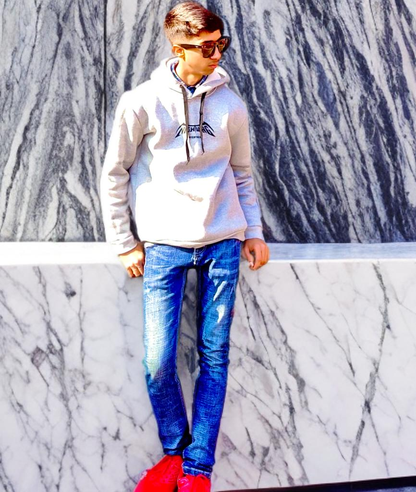

Hello, I’m Pragyan Sapkota, an enthusiastic learner and creator, always
striving to grow and make a positive impact. Currently, I’m a grade 11
student with a strong passion for programming, mathematics, creative
arts. My journey has been fueled by curiosity and a desire to understand
how things work, which has led me to explore exciting fields like
coding, algorithms, and problem-solving.
Beyond academics, I have a wide range of interests that keep me inspired
and motivated. I love Coding,Playing games etc. These activities not
only help me unwind but also provide fresh perspectives that I apply in
my work and studies.
This website is a reflection of who I am and what I stand for. It’s a
platform where I share my projects, ideas, and experiences, hoping to
connect with others who share similar interests. Whether it's showcasing
my latest creations, writing about topics I’m passionate about, or
simply sharing life updates, I aim to create a space that inspires and
engages.
One of the things I enjoy most is collaborating with others and
exchanging ideas. I firmly believe that learning is a lifelong journey,
and every interaction is an opportunity to grow. If you’re here, I’d
love for you to explore my work, share your thoughts, and connect with
me. Feel free to reach out—I’m always open to discussions,
collaborations, or even just a friendly chat!
When I’m not immersed in work or studies, you’ll likely find me [Fun
Activity, e.g., binge-watching sci-fi movies, experimenting with new
recipes in the kitchen, or trekking outdoors]. I’m also a huge fan of
digital art, futuristic technology, classic literature, and I’m always
on the lookout for new ideas and inspirations.
When I’m not immersed in work or studies, you’ll likely find me. I’m
also a huge fan of digital art, futuristic technology,classic literature
and I’m always on the lookout for new ideas and inspirations.
Thank you for stopping by my website! I hope you find something here
that resonates with you. Let’s connect and make something amazing hello.
together 😊